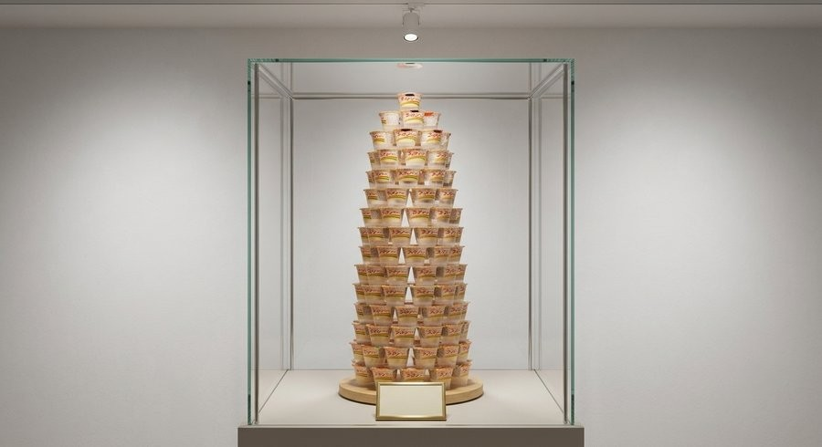
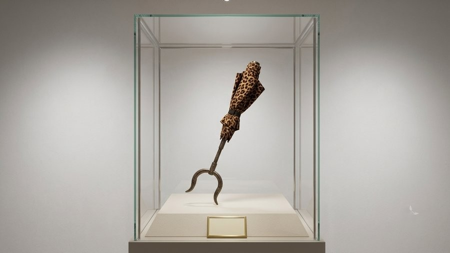
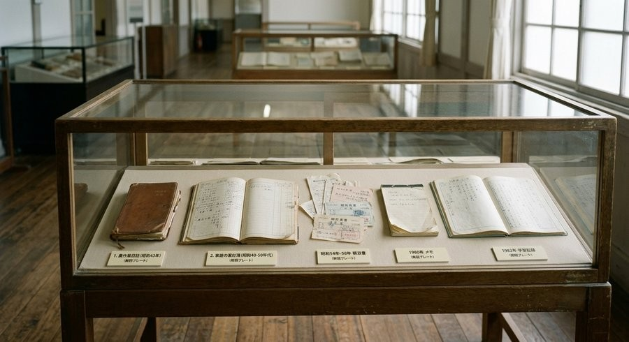
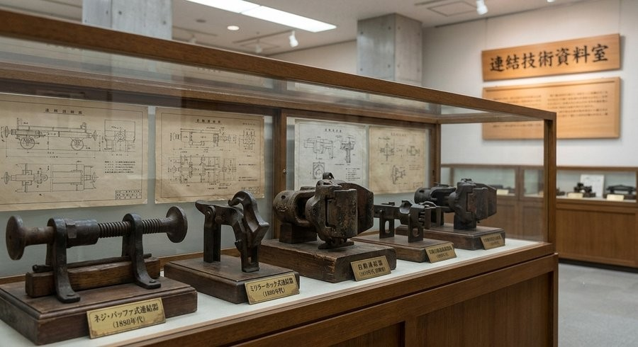
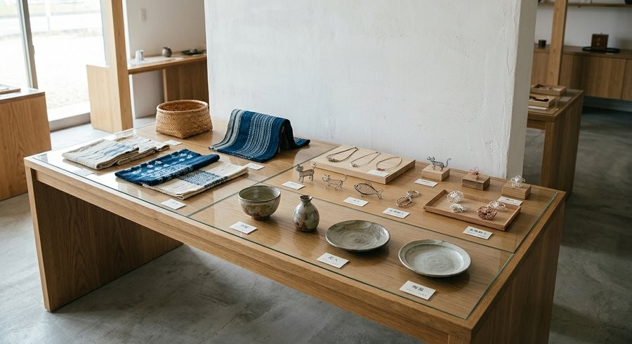
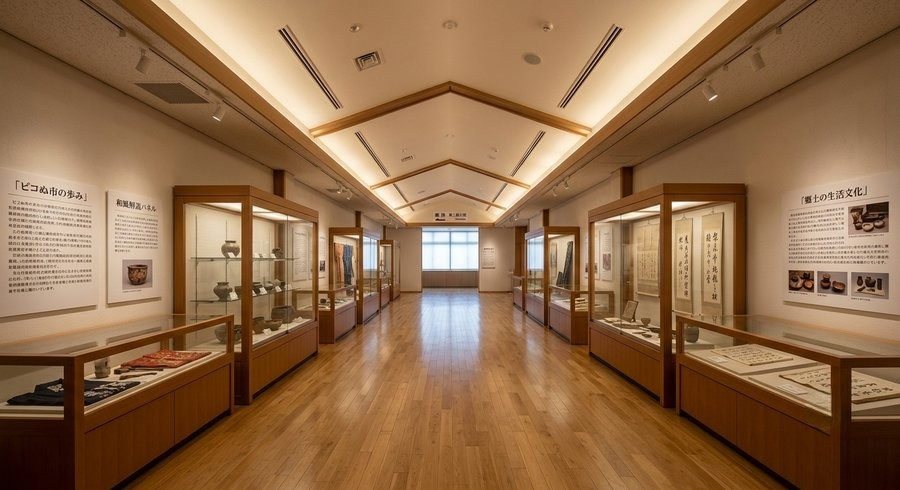
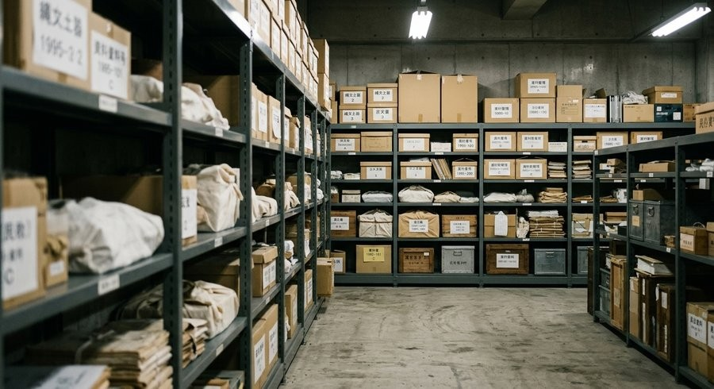

当館の主な常設展示・特別収蔵品について、写真とあわせてご紹介します。 実際の展示は、光の当たり方や展示ケースとの距離によって印象が異なりますので、 ぜひ現地でもご覧ください。
特別収蔵品

プッチンプリン容器タワー
令和8年度最重要保存物件。市内在住の市民が数年間の情熱を注ぎ込み、自宅のリビングで 静かにそびえ立たせていた容器タワーです(全4段・高さ約1.5メートル)。家族からの 「いい加減に捨てて」という強い廃棄圧を受け絶滅の危機に瀕していたところを、 不要不急保存課が保護し、当館での永久凍結保存が決定しました。

豹柄折りたたみ式守護傘(通称:文明時代の御守り傘)
現代人の心の雨に備える、野生の携帯型守護具。普段は全長30センチメートルの 静かな折りたたみ傘でありながら、持ち手には門番をイメージした「さすまた風グリップ」を 搭載しています。ピコぬ市生活安全委員会も推奨する、現代の境界線認識補助具です。
常設展示

記録具の間(ま)
手帳・日誌・レシートなど、記録のために使われた道具の変遷を紹介する展示です。 農作業日誌、家計簿、メモ帳など、市民の生活とともにあった記録具を年代順に ご覧いただけます。

連結技術資料室
市の基幹産業である鉄道連結技術の歴史資料を展示しています。ネジ・バッファ式連結器 (1880年代)から、現行のぬかピコ式フレキシブル連結にいたるまで、実物・模型・ 技術図面をあわせてご紹介しています。

民芸と余白
市内の職人による民芸品と、その制作過程を紹介する展示です。染物、陶器、 ワイヤークラフトなど、日用品と手仕事の間にあるものに焦点をあてています。
館内の様子

常設展示室
「ピコぬ市の歩み」「郷土の生活文化」などのパネルとあわせて、市の記録文化を 通史的にご覧いただける展示室です。

収蔵庫(非公開エリア)
一般公開はしていない収蔵スペースです。寄贈・寄託いただいた資料は、公開前の 期間、こちらで整理・保管しています。